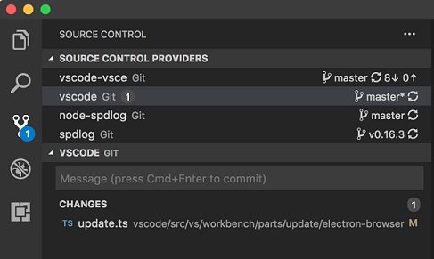
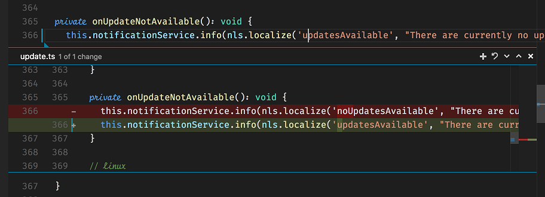

Source Control API
The Source Control API allows extension authors to define Source Control Management (SCM) features. There is a slim, yet powerful API surface which allows many different SCM systems to be integrated in Visual Studio Code, while having a common user interface with all of them.

VS Code itself ships with one Source Control provider, the Git extension, which is the best reference for this API and is a great starting point if you'd like to contribute your very own SCM provider. There are other great examples in the Marketplace such as the SVN extension.
This documentation will help you build an extension which can make any SCM system work with VS Code.
Note: that you can always refer to the
vscodenamespace API reference in our documentation.
Source Control Model
A SourceControl is the entity responsible for populating the Source Control model with resource states, instances of SourceControlResourceState. Resource states are themselves organized in groups, instances of SourceControlResourceGroup.
You can create a new SourceControl with vscode.scm.createSourceControl.
In order to better understand how these three entities correlate with each other, let's take Git as an example. Consider the following output of git status:
vsce main* → git status
On branch main
Your branch is up-to-date with 'origin/main'.
Changes to be committed:
(use "git reset HEAD <file>..." to unstage)
modified: README.md
renamed: src/api.ts -> src/test/api.ts
Changes not staged for commit:
(use "git add/rm <file>..." to update what will be committed)
(use "git checkout -- <file>..." to discard changes in working directory)
deleted: .travis.yml
modified: README.md
There are many things going on in this workspace. First, the README.md file has been modified, staged and then modified once again. Second, the src/api.ts file has been moved to src/test/api.ts and that move was staged. Finally, the .travis.yml file has been deleted.
For this workspace, Git defines two resource groups: the working tree and the index. Each file change within that group is resource state:
- Index - resource group
README.md, modified - resource statesrc/test/api.ts, renamed fromsrc/api.ts- resource state
- Working Tree - resource group
.travis.yml, deleted - resource stateREADME.md, modified - resource state
Note how the same file, README.md, is part of two distinct resource states.
Here's how Git creates this model:
function createResourceUri(relativePath: string): vscode.Uri {
const absolutePath = path.join(vscode.workspace.rootPath, relativePath);
return vscode.Uri.file(absolutePath);
}
const gitSCM = vscode.scm.createSourceControl('git', 'Git');
const index = gitSCM.createResourceGroup('index', 'Index');
index.resourceStates = [
{ resourceUri: createResourceUri('README.md') },
{ resourceUri: createResourceUri('src/test/api.ts') }
];
const workingTree = gitSCM.createResourceGroup('workingTree', 'Changes');
workingTree.resourceStates = [
{ resourceUri: createResourceUri('.travis.yml') },
{ resourceUri: createResourceUri('README.md') }
];
Changes made to the source control and resource groups will be propagated to the Source Control view.
Source Control View
VS Code is able to populate the Source Control view, as the Source Control model changes. Resource states are customizable using SourceControlResourceDecorations:
export interface SourceControlResourceState {
readonly decorations?: SourceControlResourceDecorations;
}
The previous example would be sufficient to populate a simple list in the Source Control view, but there are many user interactions that the user might want to perform with each resource. For instance, what happens when the user clicks a resource state? The resource state can optionally provide a command to handle this action:
export interface SourceControlResourceState {
readonly command?: Command;
}
Menus
There are six Source Control menu ids where you can place menu items, in order to provide the user with a much richer user interface.
The scm/title menu is located to the right of the SCM view title. The menu items in the navigation group will be inline, while all the others will be within the … dropdown menu.
These three are similar:
scm/resourceGroup/contextadds commands toSourceControlResourceGroupitems.scm/resourceState/contextadds commands toSourceControlResourceStateitems.scm/resourceFolder/contextadd commands to the intermediate folders that appear when aSourceControlResourceState's resourceUri path includes folders and the user has opted for tree-view rather than list-view mode.
Place menu items in the inline group to have them inline. All other menu item groups will be represented in a context menu usually accessible using the mouse right-click.
Note that the SCM view supports multiple selection, so a command receives as its argument an array of one or more resources.
For example, Git supports staging multiple files by adding the git.stage command to the scm/resourceState/context menu and using such a method declaration:
stage(...resourceStates: SourceControlResourceState[]): Promise<void>;
When creating them, SourceControl and SourceControlResourceGroup instances require you to provide an id string. These values will be populated in the scmProvider and scmResourceGroup context keys, respectively. You can rely on these context keys in the when clauses of your menu items. Here's how Git is able to show an inline menu item for its git.stage command:
{
"command": "git.stage",
"when": "scmProvider == git && scmResourceGroup == merge",
"group": "inline"
}
The scm/sourceControl menu is located contextually near SourceControl instances:

The scm/change/title allows you to contribute commands to the title bar of the Quick Diff inline diff editor, described further ahead. The command will be passed as arguments the URI of the document, the array of changes within it, and the index of the change which the inline change diff editor is currently focused on. For example, here's the declaration of the stageChange Git command which is contributed to this menu with a when clause testing that the originalResourceScheme context key equals git:
async stageChange(uri: Uri, changes: LineChange[], index: number): Promise<void>;
SCM Input Box
The Source Control Input Box, located atop of each Source Control view, allows the user to input a message. You can get (and set) this message in order to perform operations. In Git, for example, this is used as the commit box, in which users type in commit messages and git commit commands pick them up.
export interface SourceControlInputBox {
value: string;
}
export interface SourceControl {
readonly inputBox: SourceControlInputBox;
}
The user can type Ctrl+Enter (or Cmd+Enter on macOS) to accept any message. You can handle this event by providing a acceptInputCommand to your SourceControl instance.
export interface SourceControl {
readonly acceptInputCommand?: Command;
}
Quick Diff
VS Code also supports displaying quick diff editor gutter decorations. Clicking those decorations will reveal an inline diff experience, to which you can contribute contextual commands:

These decorations are computed by VS Code itself. All you need to do is provide VS Code with the original contents of any given file.
export interface SourceControl {
quickDiffProvider?: QuickDiffProvider;
}
Using a QuickDiffProvider's provideOriginalResource method, your implementation is able to tell VS Code the Uri of the original resource that matches the resource whose Uri is provided as an argument to the method.
Combine this API with the registerTextDocumentContentProvider method in the workspace namespace, which lets you provide contents for arbitrary resources, given a Uri matching the custom scheme that it registered for.
Next steps
To learn more about VS Code extensibility model, try these topics:
- SCM API Reference - Read the full SCM API documentation
- Git Extension - Learn by reading the Git extension implementation
- Extension API Overview - Learn about the full VS Code extensibility model.
- Extension Manifest File - VS Code package.json extension manifest file reference
- Contribution Points - VS Code contribution points reference